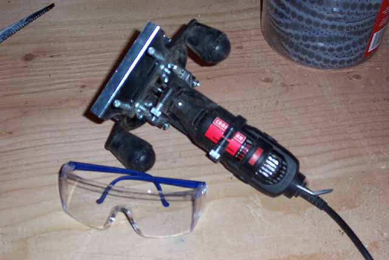
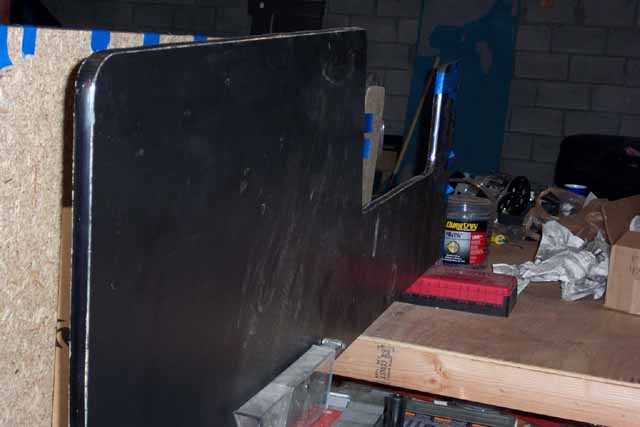

"Ya
need the right tool fer the right job".... at least that's what I've heard.
So in order to make the groove for the t-molding, I outfitted my Craftsman
Dremel with a Router kit and a 1/8th inch router bit, aligned it to the
center of the 3/4" particle board edge and went to work.
The particle board is made of uneven material so take your time and go
steady and keep the track firm against the side for an even groove, the
Dremel may fight you a bit but take your time and it will come out the
way you need it. Wear safety googles, the sawdust that
gets kicks around will no doubt find its way into your eyes and you don't
need that. Now this rig will work great for the straight
aways, the outside curves too. What it wont reach are
the inside curves, so draw the line and if your up for it, freehand it.
Its VERY difficult but I was able to do it. Again, if it looks
like your going to wind up all over the place and not in a straight line,
shave off the t-molding insert and in that area glue it down.

So, the groove is done, made a few mistakes here and there got in the way, but all is fixed and all is well. Time to apply the t-molding, do a practice run and place the t-molding into place, I recommend on the outside curves that you cut out a few "V" shaped chunks so that the t-molding insert can curve into the groove easier. I decided to dab in Gorilla Glue into the groove and then apply the t-molding and tape it down for the night so that it would cure and I wouldn't find any surprises the next morning.... like the t-molding shifting or pushing out a little bit here and there and being firmly and permanently glued into that position. Better safe then sorry. The chrome t-molding really makes the black side panels look really snazzy huh? Contact paper applied to the insides is next, thats a no brainer, peel and press....
Okay,
now for the control panel area, you can use the spare 3/4" plywood, but
its kind thick for this job, I'd recommend some 1/4" plywood the control
panel has several contours and features to it.
Okay, back to Home Depot for some 1/4" plywood, pick up 2 more 8' 2"x4"s
and a small 4' x 4' sheet of grey laminate....